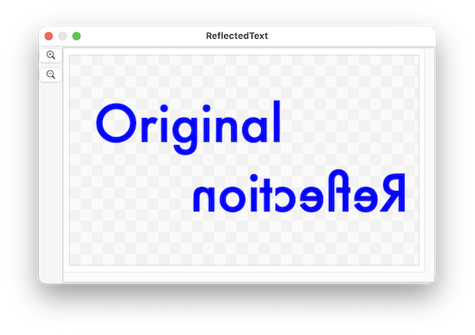
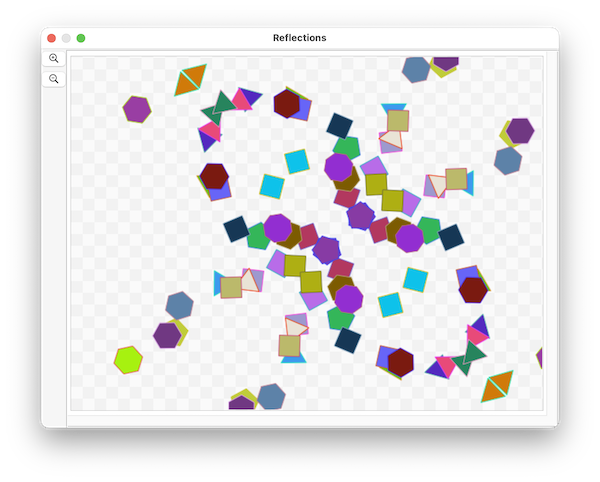

Reflection is a new feature in version 26.4.3
SinterPixels shapes understand the reflect action. This transforms the shape into a mirror image of itself.
Along with the reflect command, a mirror direction parameter is required. This direction specifies the direction of the line that acts as a mirror for the reflection operation. For example, if you specify
mirror direction {0, 1}The shape will be reflected across the y axis.
Here's a script that illustrates using the reflect action on a text shape:

tell application "SinterPixels"
set doc1 to make new document with properties {height:300, width:500}
tell doc1
set t to make new text shape with properties {position:{-80, 50}, font:"Futura", text content:"Original", font size:72, fill color:blue, line width:0}
set dupe to duplicate t
set text content of t to "Reflection"
set position of t to {-80, -50}
reflect t mirror direction {0, 1}
end tell
end tellA reflect action can also include a mirror point parameter. This parameter specifies a point on the line which acts as a mirror, allowing the exact position of a mirror to be specified. By default, the mirror point is {0, 0}
Here's a script which uses reflections in two different mirrors to create a set of randomly positioned shapes and three duplicates of each shape, thus creating a arrangemnt of shapes with some symmetry.

to makeReflections(s)
tell application "SinterPixels"
set dupeA to duplicate s
reflect dupeA mirror point {50, 0} mirror direction {1, 1}
set dupeB to duplicate s
reflect dupeB mirror point {50, 0} mirror direction {-1, 1}
set dupeC to duplicate dupeA
reflect dupeC mirror point {50, 0} mirror direction {-1, 1}
end tell
end makeReflections
tell application "SinterPixels"
tell document 1
repeat 25 times
set newPoly to make new polygon with properties {radius:20}
my makeReflections(newPoly)
end repeat
end tell
end tell